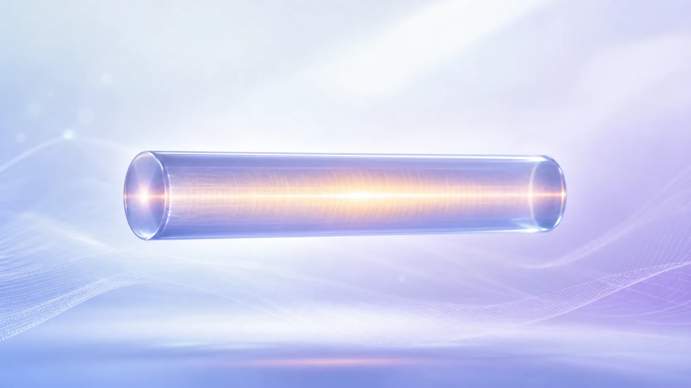
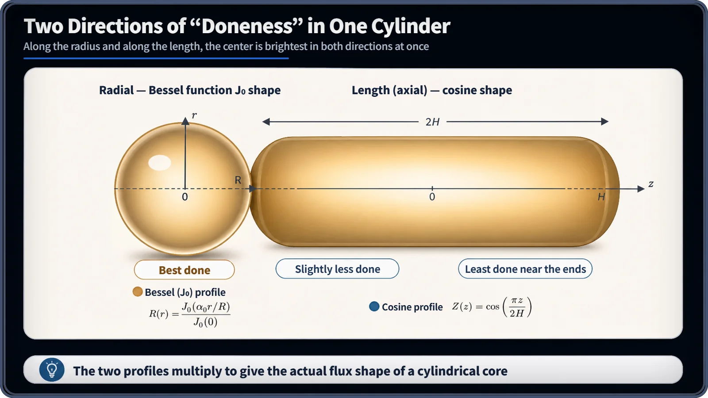
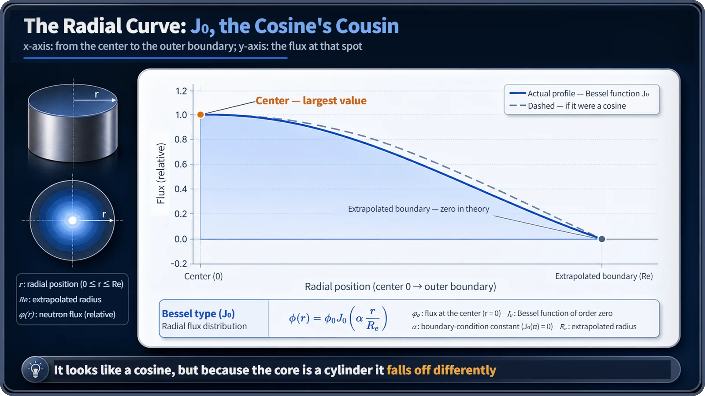

Neutron Physics & the Core · 095
Slice a Swiss Roll and See the Real Shape — Flux Distribution in a Cylindrical Reactor
Radially a Bessel function, axially a cosine: two profiles multiply into one flux shape that peaks at the center of the core.

In an idealized bare, homogeneous cylindrical core, the neutron flux is a Bessel function along the radius multiplied by a cosine along the height: φ(r, z) ∝ J₀(2.405 r/Rₑ) · cos(π z/Hₑ). The flux peaks at a single point, the center of the core, and the cylinder is far closer to real commercial cores than the flat slab model. [1]
Two directions of doneness
Bake a Swiss roll and slice it: the middle of the round cross-section is the most done, and the surface, where heat escapes, a little less. Look along its length and the same thing happens: the middle bakes well, the exposed ends less so. How well any spot is baked depends on two directions at once, multiplied together. The neutron flux in a cylindrical core behaves the same way (the analogy is only for intuition; flux is not temperature).

The formula
φ(r, z) ∝ J₀(2.405·r/Rₑ) · cos(π·z/Hₑ)
Here r is the distance from the central axis, z the distance from mid-height, and Rₑ and Hₑ the extrapolated radius and height where the flux reaches zero in theory. The axial factor is exactly the slab's cosine. The radial factor comes from separating the diffusion equation ∇²φ + B²φ = 0 in cylindrical coordinates, which turns the radial part into Bessel's equation. [1]
J₀, the cosine's cousin
J₀, the Bessel function of order zero, equals 1 at the center and first reaches zero at x = 2.405, its first zero; that is why 2.405 appears in the formula. It looks like a cosine, but it solves a different equation because each ring of a cylinder has more area the farther it lies from the axis. Scaled to reach zero at the same boundary, J₀ falls a little faster near the center, stays slightly below the cosine all the way out, and meets the boundary with a gentler slope. [2]

Two pieces of buckling
The radial constant α = 2.405/Rₑ and the axial constant γ = π/Hₑ combine into the geometric buckling of the cylinder: Bg² = (2.405/Rₑ)² + (π/Hₑ)². Buckling is the shape's bending index; the J₀ × cos flux is what that index draws in space. [1]
Why the cylinder matters
Commercial cores arrange dozens to hundreds of square-lattice fuel assemblies into a roughly circular outline, so the cylinder, not the slab, is the practical reference for judging performance and safety margins. The two directions overlap to create one hottest point at the radial center and mid-height. For an idealized bare, homogeneous core the flux there is more than about three times the core average: about 2.32 radially times about 1.57 (π/2) axially, roughly 3.6. Real plants flatten this with reflectors, fuel-enrichment zoning and control-rod placement, and plant design peaking factors depend on the reactor type and loading. [2]
| Direction | Shape | Peak-to-average (bare, homogeneous) |
|---|---|---|
| Radial | J₀(2.405 r/Rₑ) | about 2.32 |
| Axial | cos(π z/Hₑ) | about 1.57 (π/2) |
| Overall (product) | J₀ × cos | about 3.6 |
Not a perfect cylinder, not a defect
Real cores only approximate a circle, and their final power distribution, shaped by reflectors and zoning, is much flatter than the idealized J₀ × cos. The peaked shape is not a sign of any fault; it follows naturally from a finite cylinder leaking neutrons radially and axially at once.
Key takeaways
A cylindrical core's flux is J₀ along the radius times a cosine along the height. J₀ resembles a cosine but decays differently because of cylindrical geometry, the two constants add in quadrature to give the geometric buckling, and the central peak is managed in real plants by flattening.